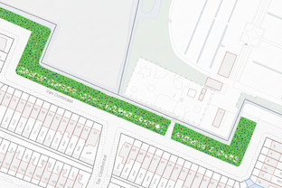

Plan
De gemeente Haarlem heeft het plan om van de van Dortstraat een bloemenparadijs te maken gehonoreerd (met 2213 stemmen)
De groenstrook aan de van Dortstraat is geliefd bij wandelaars, hondenbezitters en bewoners. Met een monocultuur aan gras en een wandelpaadje is hij alleen wat saai. Een strook langs de weg met inheemse enkel- en meerjarige bloemen kan dit veranderen. Een strook van 1 of 2 meter langs de lengte van de van Dortstraat zou leiden tot een bloemenzee van ca. 800 vierkante meter.Planning
- Plan ingedient bij gemeente Haarlem: 1 oktober 2025.
- Eerst ontwerp: november 15 2025. 
- Plan gehonoreerd: 14 december 2025.
- Vervolg ontwerp: januari 2026.
Uitvoering
In overleg met de bewoners van de van Dortstraat, en in samenwerking met Berry van der Hoorn (Onderzoeker biodiversiteit) en Ad de Veld (groenarchitect). Schatting van de kosten:
- Afgraven grasstrook: €4000
- Grond geschikt maken voor bezaaiing: €500
- Meerjarig bloemenzaad: €1000
- Eenjarig bloemenzaad: €500
- Onderhoud: €500/jaar
Totaal: €11.000
Andere initiatieven
- 10.1.2026 Van Dortstraat on Ice (Iniatiefnemers: Alwin, Myrthe)
 Foto megaakt door Myrthe.
Foto megaakt door Myrthe.